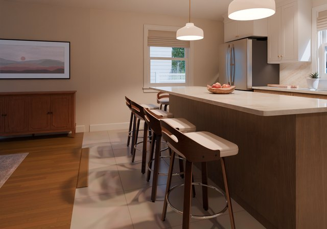
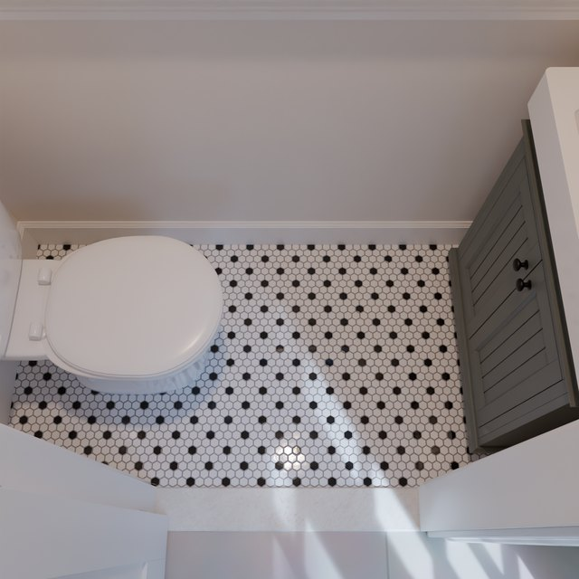
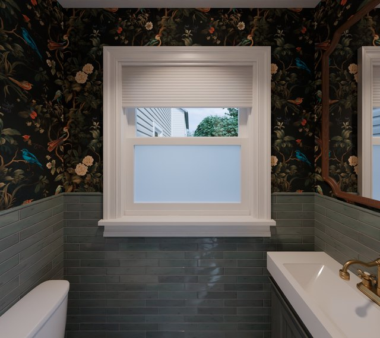
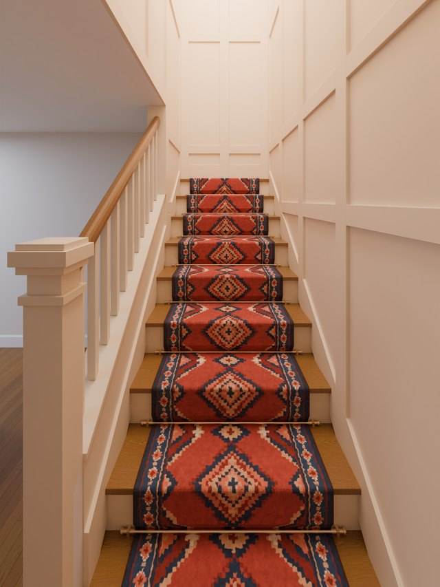
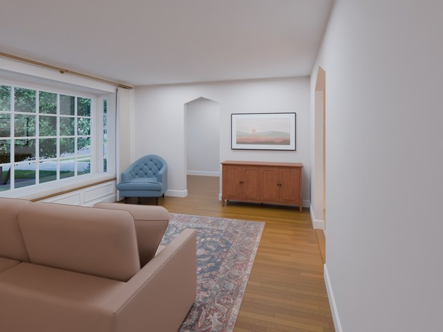
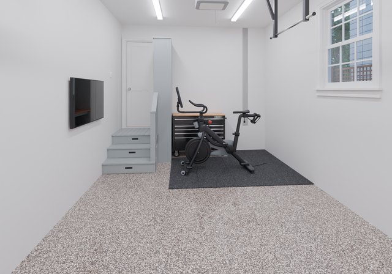
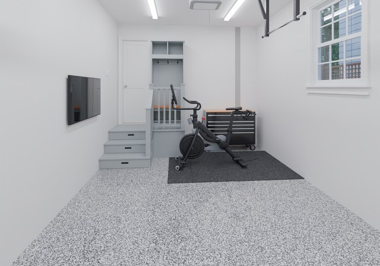
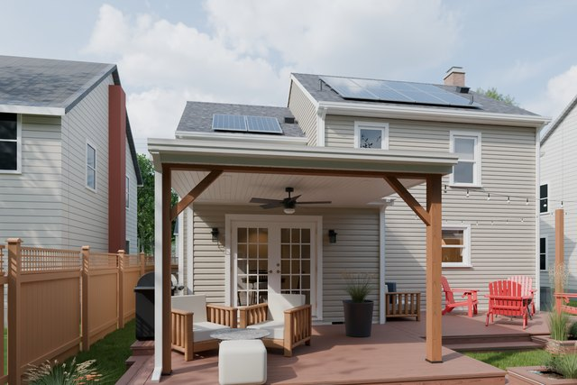

Kitchen Remodel Renders
Photoreal renders of the new kitchen, dining room, powder room and garage, and the living room's furnishings and stair, built from the floor plan, site measurements, the ordered appliances and the chosen finishes. Each page compares options with identical cameras and lighting. Grouped by room; within a room the pages run in the order their decisions are needed on site (framing and rough-in first, then floors and finishes, furniture last).
Kitchen5 pages

Kitchen: The Light Over the Island
12 pendants · 3 views
The lights over the island: the brass linear pendant the model has had as a placeholder, the Rennnsan Remy, the GoYeel and the Savoy House; and your four new single pendants, each hung two and three across the island (a pair at the quarter points, a trio at the middles of the thirds), all with their lowest point 30 in over the island and the same total light as the current pendant. The evening view shows how each one lights it.

Kitchen Floor Comparison
6 floors · 6 views
One floor runs through the kitchen and dining room, and into the powder room unless it gets its own mosaic (the powder room floor page). The living room keeps its existing red oak in every option (its colour retuned to your new photos: it no longer drifts green). New: Modena Natural from the store; the Suttongrove, the red oak strip and the two oak placeholders are gone.

Living Room Threshold
2 thresholds · 2 views
Where the new kitchen floor (Daltile Palomino here) meets the living room's existing red oak, in the Wall B opening: a bevelled saddle across the 4½ in wall, in red oak or honed Taj Mahal.

Countertop Stone
5 stones · 4 views
The counters, island top and full-height slab backsplash in one stone. Taj Mahal is the current pick; your two Earthstone quartzites; Perla Santana is shown honed and polished (your second link repeated the first, and Earthstone lists the same slab both ways).

Counter Stools
3 stools · 3 views
Five stools at the island's seating side. The TYBOATLE rattan stool is the current pick, beside the CIMOTA and your new KUNZENT bentwood stool in beige (the VATROS is gone).
Powder room4 pages

Powder Room: Door
3 doors · 3 views
The 28-inch swing door, or a 24-inch ARK DESIGN pocket door that slides into the wall toward the toilet (shown half open so its panels read). The room is now 30 in deep; the pocket still fits along the wall exactly as in the drawing for the builders. Bailey vanity, the WallBeyond walnut mirror (the only mirror now), painted walls.
Powder Room: Vanity and Toilet
7 vanities × 2 toilets · 2 views
The room is now modelled 30 in deep (your correction: it was 24½ in, read off the plan, where 24½ is the vanity wall between two fillers). Seven vanities in the same spot on the east wall and the two toilets you found on the west wall, each vanity with your new Aolemi faucet in antique gold and the WallBeyond walnut mirror, now in the 24 × 36 in size your link selects (3 in clear each side on the 30 in wall). Your faucet is a 4 in centerset (three holes): the Dacion and Gerharda tops come drilled for it, the one-hole tops get two more holes drilled (you're fine with that), and only the Garvee can't take it. Each toilet stands at its own rough-in: the drain moves to suit, or the Cadet comes in a 12 in version. The clear space in front of the toilet is in each one's notes: 21 in is the usual minimum.

Powder Room: Its Own Floor
3 floors · 2 views
The powder room with its own floor instead of the kitchen's carried through: your two mosaics from the store, with a honed Taj Mahal saddle under the door where they meet the dining room's floor. The kitchen floor here is the placeholder 24 in tile; on the floors page the powder room follows each kitchen option.

Powder Room: Walls
4 wallpapers × 10 lower walls · 2 views
Three Painted Paper wallpapers at their true repeat size, or paint, each over a lower wall: your earlier picks (the green zellige, two beadboards) and your two store tiles, LuxCraft Antique Pearl and Camden Emerald, three ways: half height all round, the vanity wall alone floor to ceiling (a backsplash as a feature wall, the mirror hung on the tile), or both. The room is now 30 in deep; the WallBeyond walnut mirror, Bailey vanity in Vogue Green, frosted lower sash.
Dining room2 pages

Dining Room: Corner Bench, Walls, Rug and Light
4 seating options × 3 wall options × 3 rug options × 3 lights · 2 views
Your table in its current spot or tucked into an L banquette in the corner opposite the powder room, from your pins; the benches now run to 6 in from the door to the garage (in the west wall now) and about 2 ft further along the windows. Mix the bench, wall paneling, rug and a light over the table; the evening view shows what the light does. New: a double-pedestal table and a washable rosette rug. Paneling colours have their own page.

Dining Room: Paneling Colour
2 paneling options × 5 colours · 2 views
The V-groove paneling in five paints, floor to ceiling or to 54 in under a ledge, in one styled corner: the Shaker banquette, the rug and the cone pendant. In Blender, the Kitchen panel's Dining room section has a colour picker for any other paint.
Living room and stair2 pages

Living Room: Stair Paneling and Runner
2 wall options × 2 runner options · 3 views
Your two stair photos on the stair to the second floor: box-panel moulding up the stairwell wall (a grid stepping with the stair, as in the first photo) and on the knee wall's living side (raking panels), all in one warm cream; and a waterfall kilim runner with brass rods at every riser, with a matching piece on the landing step (from the second photo). The runner's pattern is drawn for the model: no product matches the photo.

Living Room: Sofa, Rug, TV Wall and Curtains
4 sofas × 2 armchair options × 2 sideboards × 2 curtains · 3 views
The living room furnished with the new ideas: the bay window back with its window seat and cushions, a Frame TV where today's TV hangs with a sideboard under it, curtains on a brass rod across the bay, Kirsten's Loloi Jules rug under the sofa, and new: an armchair in the empty corner by the bay (my pick, see its notes). Compare the 7th Avenue in desert taupe (the olive and sand are gone, as is the Medley), the Joybird Sebastian, your new Koala Wanda and your current couch. The floor's colour is retuned to your photos. The TV shows a placeholder picture in Art Mode.
Garage2 pages

Garage: Epoxy Floor and Lights
3 floors × 2 lights · 3 views
The garage as it stands (the organizer facing the door, the Peloton, the YUKON by the landing) with the three epoxy flake blends and the two light fixtures.

Garage: Layout, Workout Corner and Car
3 layouts × 3 workout set-ups × 2 cars · 3 views
The fit-out as it stands (not final): a 30 in landing, three steps down with shoe drawers in the risers, your YUKON cabinet, gym rubber, a Peloton facing a TV on the north wall by the steps, a ceiling pull-up bar and LED shop lights. Try the back wall three ways: the organizer facing the door (as now), the organizer back against the wall on a longer platform (your first layout), or a mudroom bench and beadboard like your new photo. Swap the workout gear and park a Caterham Seven. The epoxy and the lights have their own page.
Outside3 pages

Back Porch: A Covered Seat by the Doors
2 porches × 7 covers · 4 views
Somewhere to sit just outside the dining room's French doors, under a roof. Two chairs sit side by side beside the door that gets used every day, its swing and the path out to the steps kept clear. Each cover is shown over two porches, one hardwood deck and one raised bluestone. Both sit one step (about 7½ in) below the doors: building code allows that at a door that isn't the house's main exit, and it buys headroom under every cover without touching the roof. A new roof can't sit higher than the existing eave because the upstairs windows are just above it, so the flat roof and the gable keep their eaves at the old roof line; with the step down and a beam flush with the ceiling, the flat roof gets about 8 ft of headroom. It's shown 11 ft deep over the full porch and 8 ft deep over a porch shortened to match. The gable can also open into its pediment with a curved arch (about 9 ft 5 in at the centre). The gable hips back into the old roof and stops short of the solar panels, so none of them need to move. The two aluminium pergolas are off-the-shelf kits. Each cover also brings string lights out to two cedar posts on the lawn. In the evening views the porch and string lights are on (they run dusk to dawn).

Back Door: Wall Lights
3 lights · 2 views
Three outdoor wall lights, a pair either side of the dining room's French doors, about 67 inches up. They're dusk-to-dawn, so they're off by day and on in the evening view.

Back Patio: Deck or Stone
6 patio options · 4 views
Ideas for the space off the dining room's new French doors, built on your rough shape along the back wall (about 11 × 16 ft, plus a 5 ft strip past the doors) and stretched 2–3 ft toward the yard where steps or a table need it. With the A/C moved to the north side, every option now runs right into the sheltered corner by the bump-out, and all stay clear of the playset. The furniture is generic: it's there to show how each layout lives.